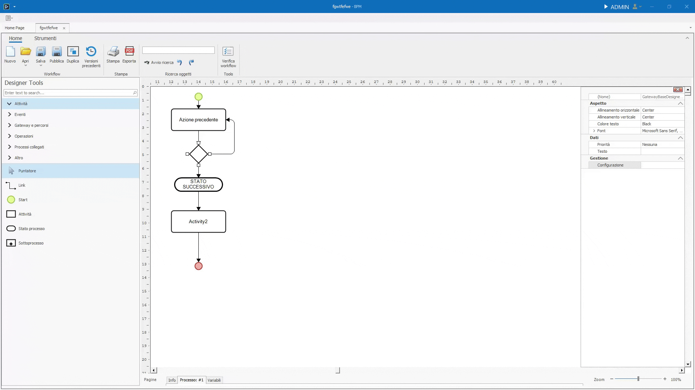
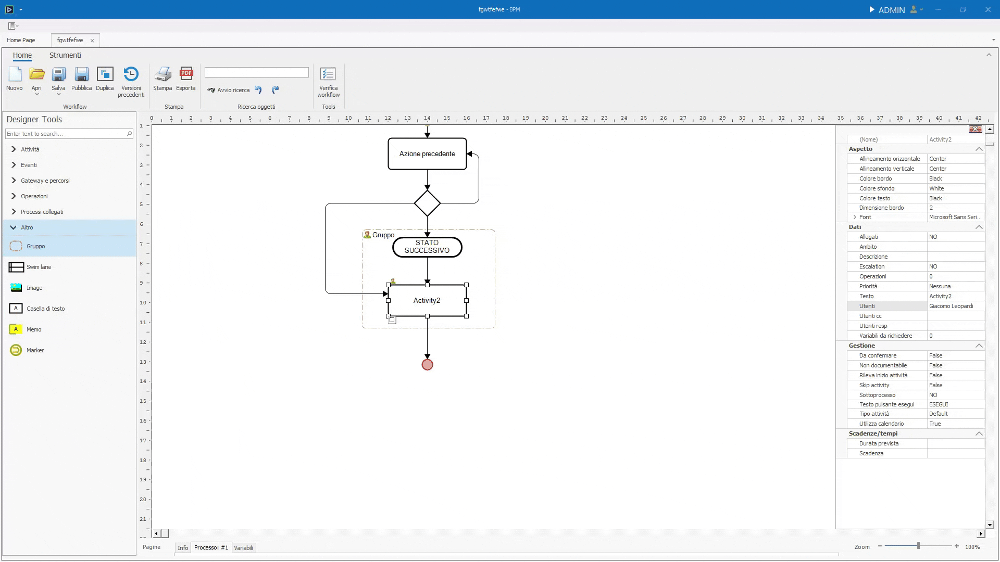

Designer Tools
In questa pagina verranno descritte dettagliatamente tutte le sezioni e gli elementi all'interno del Designer Tools e Menù contestuale.
Il Designer Tools è il pannello che si trova sulla sinistra, si accede al Menù contestuale di un elemento cliccandoci sopra col tasto destro.
Designer Tools
Il Designers Tools è suddiviso in 6 sezioni.
Alla sommità è situata la search bar. Digitando al suo interno è possibile filtrare gli oggetti delle varie sezioni. I risultati della ricerca appariranno nella propria sezione. Se più oggetti corrispondono col termine ricercato, verranno mostrati nelle proprie sezioni, se diverse, collassate.
Attività
Sezione contenente i principali elementi di un flusso.
Puntatore
Cliccandolo, riporta le funzionalità del mouse a quelle standard: click per tasto sinistro e menù contestuale per tasto destro.
Non essendo trascinabile nel canvas e, quindi, non essendo un elemento, non possiede attributi.
Link
Il link è un collegamento tra un elemento e un altro.
Una volta selezionato dal Designer Tools, passando il cursore sopra un elemento, appariranno dei cerchi gialli. Selezionando un cerchio e tenendo premuto il tasto sinistro, inizierà il tracciamento del link.
Mentre si sta tracciando, passando il cursore su un elemento differente dal primo, è possibile collegarlo ad uno dei punti del destinatario.

Fatto ciò, i due elementi saranno collegati: spostandoli all'interno del canvas, il link rimarrà ancorato ad essi.
Cliccando sul collegamento con il tasto destro del mouse, si aprirà il menù di contesto contenente una lista di proprietà:
- Nome Collegamento, aprirà un dialog dove poter inserire il nome del link che verrà mostrato nel canvas.
- Percorso per Pianificazione, se spuntato, il processo, al suo inizio, riterrà il collegamento come percorso default per determinare le attività future.
- Condizioni Abilitazione, complementari al Percorso per Pianificazione, le condizioni di abilitazione decidono se un Link sia percorribile o meno. Tale decisione è basata sulle formule scritte nel dialog che si apre una volta cliccata l'opzione. Una volta inserita una condizione, l'inizio del Link assumerà una forma a rombo. Se da un elemento, sono collegati più Link con uscite diverse, essi sono trattati come un percorso inclusive, documentato e approfondito qui.
- Imposta variabili, è possibile impostare delle variabili quando il link viene attraversato, arrivando a destinazione coi nuovi valori assegnati.
- Tipo Linea, è possibile decidere tra le varie opzioni il comportamento del link all'interno del canvas.
- Elimina Collegamento
Start
Lo Start è il punto di inizio di ogni flusso manualmente azionato.
Un flusso può avere più Start. In tal caso, alla partenza del processo, verrà richiesto all'utente da quale Start partire.
Ogni Start ha necessariamente bisogno che le Variabili da richiedere siano dichiarate.
Una volta inserite, apparirà una @ accanto allo start nel canvas.
Allo stesso modo, se sono presenti delle Variabili da richiedere, è dovuto specificare gli Utenti e Responsabili della task.
È inoltre possibile richiedere l'inserimento di allegati e lo svolgimento di operazioni, sempre tramite il menù contestuale, alla voce Allegati da richiedere e Operazioni.
Uno Start consente di effettuare delle operazioni In esecuzione e ad Esecuzione terminata.
Attività
Le Attività sono il blocco fondamentale dei processi. Servono a definire il lavoro di ogni persona. Attività per attività, un processo viene concluso, portando a termine lavori che, senza il BPM, risulterebbero tediosi e ad alto compenso di tempo.
Le Attività, nel pannello degli attributi, presentano una serie di caratteristiche che rendono la task personalizzabile e utilizzabile in ogni ambito. Nella sezione Gestione si trovano gli attributi principali di un'attività:
Da confermare
Attributo che aggiunge la necessità di confermare la fine dell'attività per poter mandare avanti il flusso.
Rileva inizio attività
Se impostato su true, rileva la data di inizio dell'attività e non viene dedotta dalla fine della task precedente.
Skip activity
Se impostato su True salterà l'esecuzione della task.
Perché inserire nel disegno una task che non verrà mai eseguita?
L'attributo Skip activity serve solamente a rendere il disegno più fruibile, facendo capire all'utente finale il modo in cui determinate azioni vanno svolte o suddivise.
Sottoprocesso
Se impostato su True, rende l'Attività un Sottoprocesso.
Per approfondire il concetto di Sottoprocesso scendi alla sezione Sottoprocesso o clicca qui.
Testo pulsante esegui
Attributo di tipo testuale. Il testo inserito apparirà al posto di "Esegui" sul bottone esegui.
Tipo attività
Attributo che va scelto da un dropdown. Serve come filtro.
Utilizza calendario
Utilizza calendario è un attributo che aggiunge alle Scadenze/Tempi la logica per capire quando un giorno è lavorativo o meno, basandosi sul calendario. Se una task ha una data di scadenza, Utilizza calendario fa sì che i giorni del weekend non vengano contati.
Il concetto di pianificazione e scadenze è approfondito qui
Stato processo
L'elemento Stato processo serve a visualizzare graficamente lo stato del processo. Uno Stato processo consente di effettuare delle operazioni solo In attivazione.
Nella sezione Gestione ci sono 2 attributi:
Blocca edit
Quando si entra nello stato il documento non è più modificabile dal magazzino. Anche gli utenti con le dovute autorizzazioni non possono modificare i dati immessi nelle variabili nel processo.
Stato di chiusura
Impostando questo attributo a True, si sancisce la fine del processo interrompendo tutte le attività in corso.
Sottoprocesso
Un Sottoprocesso è un processo avviato dall'interno di un altro processo.
Nel canvas dove viene inserito un Sottoprocesso (o un'attività con attributo Sottoprocesso impostato a true) l'elemento apparirà uguale ad una semplice attività, ma con una croce sotto la label descrittiva.
Cliccando due volte sopra l'elemento, si entra nel canvas del Sottoprocesso.
Le funzionalità sono le stesse di un processo normale. L'unica differenza è nello start, che avviene non appena l'elemento principale del Sottoprocesso entra in esecuzione e alla fine del sottoprocesso si passa all'elemento seguente nel processo principale.
Gli attributi che differenziano un'attività da un Sottoprocesso sono nella sezione Scadenze/Tempi. Entrambi questi attributi vengono approfonditi nella loro sezione qui.
Eventi
La sezione Eventi raggruppa tutti gli elementi che fungono da Start e gli elementi che fungono da fine.
Variabili da richiedere e Start
Essendo tutti elementi predisposti per essere l'inizio di un processo (ad esclusione di quelli di fine processo), è vivamente consigliato di impostare le variabili da richiedere direttamente nello Start.
Start
Lo Start convenzionale è stato trattato qui.
Start su evento
Lo Start su evento ha la capacità di iniziare un processo quando un evento predefinito che arriva dall'esterno. Gli eventi sono definiti dai connettori che a loro volta sono elencati nella voce "Elenco connettori" nella sezione "Configurazione" del menù principale.
Start a tempo
Lo Start a tempo ha la capacità di iniziare un processo in modo ricorrente.
Configurando lo Start a tempo è possibile impostare una descrizione e ogni quanto tempo far partire nuovamente il processo.
Le opzioni sono:
- Ricorre ogni giorno.
- Ricorre ogni settimana, dove è necessario scegliere il giorno settimanale in cui il processo ricorrerà.
- Ricorre ogni mese, dove è necessario scegliere il numero del mese in cui far ricorrere il processo, altrimenti si può spuntare il checkbox "Ultimo del mese" per avviare il processo nell'ultimo giorno di ogni mese.
In basso, infine, si ha la possibilità di specificare l'ora in cui partirà il processo.
Attesa
Analogamente allo start a tempo, l'Attesa è un genere di start che, una volta avviato un processo, attenderà il tempo stabilito prima di continuare.
Configurando l'evento, è possibile impostare una descrizione, il numero di giorni da attendere e cosa fare una volta che il tempo prestabilito sia passato.
Tramite l'inpuit numerico iniziale è possibile stabilire il numero di giorni da attendere. Dopodiché tramite è possibile specificare una sola scelta su che azione dovrà svolgere l'elemento:
- Non attendere oltre.
- Attendi il primo X.
- Attendi che sia il primo, secondo, terzo, quarto o ultimo X del mese.
- Attendi che sia il Y del mese.
X è il giorno della settimana scelto tramite un dropdown. Y è il giorno del mese impostato tramite input numerico.
Infine è anche possibile far attendere l'inizio fino ad una determinata ora del giorno stabilito tramite un'ultima checkbox e impostando l'orario.
Fine e Termina processo
Fine e Termina processo sono due elementi per dichiarare completato un processo. La differenza tra i due elementi è che Termina processo termina tutti i rami paralleli e sottoprocessi attivi.
Gateway e percorsi
La sezione Gateway e Percorsi raggruppa gli elementi che consentono di instradare il processo in direzioni diverse dipendentemente dalla configurazione dell'elemento.
Percorsi alternativi (exclusive)
L'elemento Percorsi alternativi (exclusive) permette di dividere il percorso del processo. Da questo gateway è possibile ramificare in percorsi diversi il processo, ognuno con la propria condizione di instradamento. Le condizioni dei percorsi sono impostate schiacciando tasto destro sul gateway e cliccando sull'entrata Configurazione.
Una volta aperto il popup di configurazione, è possibile definire le condizioni di ogni percorso cliccando sui bottoni, uno per percorso, situati accanto alle entrate della colonna "Condizione".

Dalla configurazione è anche impostabile il percorso da considerare come default che sarà quello che il processo percorrerà se nessuna delle condizioni di uscita risulta come True.
Cosa succede se più uscite risultano come true?
I Percorsi alternativi (exclusive) sono scelte che vanno ad instradare il processo in un singolo percorso. Di conseguenza, se più condizioni di uscita risultano come True, il percorso instradato sarà il primo.
Percorsi paralleli (parallel)
L'elemento Percorsi paralleli (parallel) funge da sdoppiatore del percorso principale in ramificazioni parallele. Tutte le ramificazioni parallele sono contemporanee, ma l'avanzamento varia in base allo svolgimento delle task interne di ognuna.
In questo caso non ci sono condizioni, in quanto tutti i rami andranno eseguiti.
Percorsi liberi (inclusive) e Complex
Gli elementi Percorsi liberi e Complex sono il contrario dei percorsi exclusive: tutte le condizione d'uscita che risultano come True vengono instradate.
Sincronizza
L'elemento Sincronizza serve a convergere le ramificazioni che si sono create utilizzando i Gateway. Configurando l'elemento, è possibile definire il Number to pass, ovverosia quali percorsi devono essere arrivati all'elemento per far sì che il processo continui.
Operazioni
Le Operazioni sono azioni specifiche e complesse: per questo è presente una sezione dedicata a loro che entra nelle specifiche, approfondendo ogni aspetto del loro funzionamento.
Clicca qui per saltare alla loro sezione.
Processi collegati
Analogamente alle operazioni, i Processi collegati hanno una sezione approfondita qui.
Altro
La sezione Altro raggruppa gli elementi che non rientrano nel resto delle categorie.
Gruppo e Swim lane
L'elemento Gruppo è un raggruppatore di elementi. Gli elementi all'interno del Gruppo possono essere svolti dagli utenti assegnati al Gruppo stesso.

L'elemento Swim lane è analogo a quello di gruppo. Per aggiungere pioù Swim lane basta trascinarne quante necessarie nel canvas. Le Swim lane suddividono il disegno in corsie, ognuna coi propri utenti associati che potranno svolgere le azioni all'interno della propria corsia.
Multuple associazioni di Utenti
Se ad un Gruppo o una Swim lane e ad una task interna ad essi sono associati degli utenti e tali utenti differiscono con quelli associati nel contenitore, la task potrà essere svolta solo dagli utenti associati alla task stessa.
Image, Casella di testo e Memo.
Image è un elemento statico, attraverso cui è possibile inserire un immagine all'interno del canvas.
La Casella di testo è del semplice testo slegato ad altri elementi. È utile per dare titoli a parti o sezioni del flusso.
Il Memo ha la stessa funzionalità di un postit ed è collegabile ad un task tramite il link. Così facendo, tra la task e il Memo apparirà una linea tratteggiata gialla. È utile per scrivere note e ricordare agli utenti delle informazioni chiave per lo svolgimento di una task.
Marker
Il Marker è uno strumento utilizzato per navigare all'interno del processo tra diverse pagine. Questo risulta particolarmente utile quando si desidera rendere il processo stampabile, ad esempio su un foglio A4, evitando di estenderlo eccessivamente in verticale.
In questi casi, si aggiunge una nuova pagina, e il Marker funge da "collegamento" che consente di proseguire con il processo su un'altra sezione. In pratica, è un riferimento che rimanda a un'altra pagina del processo.
Menù contestuale
Il menù contestuale appare quando si preme il tasto destro del mouse su un oggetto nel canvas. In base all'oggetto cliccato le entrate saranno differenti.
Colore e font
Generalmente, in un oggetto è possibile cambiare:
- Colore e font della targhetta dell'elemento.
- Colore dello sfondo.
- Colore e spessore e del bordo.
Allineamento
L'entrata Allineamento a sua volta ha 10 scelte:
Allinea
Allineano gli elemento selezionati secondo il tipo di allineamento in base alla posizione dell'elemento su cui è stato cliccato il tasto destro.
Porta davanti e Porta dietro
Modifica lo Z-index di un oggetto: se un oggetto risulta sovrapposto ad un altro, per portarlo in avanti è sufficiente cliccare Porta avanti per portarlo in primo piano. Lo stesso, ma al contrario, vale per Porta dietro.
Distribuisci
Selezionando più oggetti(1)è possibile spostarli in massa distrubuendoli su uno dei loro assi utilizzando le due entrate Distribuisci verticalmente o Distribuisci orizzontalmente.
- Per selezionare più oggetti è necessario tenere premuto Ctrl o Shift quando si va a cliccare, col tasto sinistro, su un elemento. Altrimenti, cliccando su una parte vuota del canvas e tenendo premuto, è possibile delineare un'area i cui elementi interno verranno selezionati.
Manipolazione oggetto
Oltre al tagliare e copiare un oggetto, è possibile spostarlo da una pagina ad un'altra del processo tramite l'entrata Sposta oggetto alla pagina ....
Manipolazione Testo e Label
Nel menù contestuale è presente l'entrata Sposta testo per spostare l'etichetta dell'oggetto dove si vuole nel canvas. Essa rimarrà ancorata al punto dove si è spostata. L'entrata Modifica Testo consente di modificare il testo della Label.
Impostare un oggetto come oggetto di avvio
Rimozione dello Start
È possibile rimuovere lo Start, ma è un comportamento non convenzionale e tendenzialmente sconsigliato in quanto il processo richiederà all'utente di inserire direttamente le variabili da richiedere.
Premendo tasto destro, l'entrata Imposta come oggetto di avvio renderà l'oggetto su cui si è cliccato, il punto di partenza.
Definire gli Utenti e i Responsabili, le Variabili da richiedere e gli Allegati da richiedere
Tramite l'entrata Utenti e responsabili è possibile definire chi dovrà svolgere una determinata task.
Analogamente, è possibile definire i dati che, gli utenti precedentemente, assegnati dovranno inserire.
Questo è possibile tramite l'entrata Variabili da richiedere che, una volta cliccata, aprirà una nuova pagina dedicata all'inserimento delle variabili.
Questa pagina, chiamata Magazzino delle variabili, viene trattata e approfondita nella sua sezione apposita qui.
Per aggiungere una Variabile da richiedere, basta prenderne una dalla lista di sinistra e trascinarla nel canvas.
Così facendo, gli utenti a cui è assegnata la task, dovranno inserire i valori delle variabili così definite.

Infine, è possibile definire gli allegati da definire tramite l'entrata Allegati da richiedere.
In questo caso non è possibile definire gli allegati che andranno inseriti, bensì dei filtri che vadano a scremare i possibili allegati inseribili. Tutto questo tramite un popup.
Il popup presenta due checkbox:
- La prima, se spuntata, renderà funzionanti i filtri e le preferenze che vengono definite nel resto del popup.
- La seconda, invece, fa sì che gli allegati caricati non possano essere poi modificati.
Dopodiché una sezione dedicata ai filtri: qui è possibile infatti definire il Gruppo allegato, il Tipo allegato e il Percorso.
Il Gruppo allegato e il Tipo Allegato sono definibili dal menù delle impostazioni alla sezione Configurazione, sottogruppo Allegati.
Per il Percorso invece è necessario scegliere una delle cartelle interne al processo.
Per crearne una è necessario cliccare la voce Allegati dalla barra degli strumenti.
Da lì si apriranno le impostazioni generali del processo relative agli allegati.
Cliccando tasto destro sulla lista delle cartelle, sarà possibile crearne una nuova. Una volta fatto, sarà presente tra le scelte disponibili per determinare il percorso degli allegati di una task.
Sotto i Filtri, è possibile gestire la Dimensione Massima in KB (Dim. Massima kb), tramite un input numerico. Il numero immesso sarà il tetto massimo per la dimensione di un file.
Nella parte bassa del popup invece si ha il gruppo relativo ai Tipi di file consentiti.
Tramite una serie di checkbox è possibile definire le estensioni dei file che possono essere accettati.
L'input di testo finale invece è riservato ad estensioni specifiche per gli utenti che ne hanno bisogno. Tali estensioni vanno separate dalla virgola e includendo il punto.
| Altre Estensioni | |
|---|---|
Operazioni
L'entrata relativa alle Operazioni apre un popup che permette di eseguire delle operazioni in diversi momenti della task.
In base all'elemento su cui si apre il popup, i momenti in cui sarà possibile svolgere un'operazione saranno diversi.
Per svolgere un'operazione basta trascinarla dalla colonna Operazioni disponibili a quella del momento in cui si desidera svolgerla.(1)
- Il titolo della colonna è il momento in cui verrà svolta l'operazione.
Le Operazioni vengono svolte in ordine Top to Bottom.
Le Operazioni sono azioni specifiche e complesse, per approfondimenti e spiegazioni è nmecessario rifarsi alla loro sezione qui.
Formula di validazione
La Formula di validazione è una formula che determina se è possibile continuare con la task successiva del processo.
Cliccando su questa entrata, verrà aperto il popup per la scrittura delle formule.
Le formule di validazione degli elementi del canvas sono in una relazione AND con le altre formule definibili dalla barra degli strumenti della pagina delle variabili.
Escalation
L'Escalation è un'entrata del menù contestuale specifica di alcuni elementi.
Con l'utilizzo dell'Escalation è possibile, dopo un determinato numero di giorni inserito dall'utente, eseguire le 3 azioni seguenti:
- Non variare attività
- Riassegna attività, cedendo ad altri utenti la possibilità di mandare avanti il processo
- Chiudi attività
Dall'Escalation poi è possibile iniziare un collegamento, così da poter instradare il processo altrove in caso si dovesse riassegnare o chiudere la task.
Pianificazione e Scadenze
Il popup "Pianificazione e Scadenze" permette di impostare i dettagli di pianificazione, scadenze e priorità relativi a una specifica attività (task). È diviso in tre schede principali: Pianificazione e scadenze, Variabili, e Dati aggiuntivi.
In Pianificazione e Scadenze è possibile impostare la durata prevista e la scadenza di una task. Inoltre sono presenti 3 checkbox:
- Da confermare
- Rileva inizio
- Utilizza calendario
La tab Variabili consente di associare variabili ai campi relativi a una pianificazione aggiornata dell'attività. I campi configurabili includono:
- Data inizio prevista aggiornata, consente di collegare una variabile alla data di inizio pianificata dell'attività nel calendario.
- Data fine aggiornata, permette di associare una variabile alla data di fine dell'attività pianificata.
- Durata prevista (giorni), offre la possibilità di collegare una variabile che rappresenta la durata stimata dell'attività (in giorni).
- Scadenza dell'attività, configura una variabile per rappresentare la data di scadenza dell'attività.
- Priorità dell'attività, consente di associare una variabile alla priorità assegnata all'attività.
La scheda Dati aggiuntivi consente di associare variabili a campi specifici relativi ai dati pianificati e ai dati effettivi di un'attività. Questa scheda è divisa in due sezioni principali: Dati Previsti/Pianificati e Dati Effettivi.
Nel gruppo Dati Previsti/Pianificati è possibile configurare le variabili per i dati pianificati dell'attività. I campi disponibili sono:
- Data inizio prevista/pianificata, permette di collegare una variabile alla data di inizio pianificata dell'attività nel calendario.
- Data fine prevista/pianificata, consente di associare una variabile alla data di fine pianificata dell'attività.
- Durata prevista (giorni), Collega una variabile che rappresenta la durata stimata dell'attività in giorni.
Il Gruppo Dati Effettivi permette di configurare le variabili per i dati effettivi dell'attività, ovvero i valori realmente registrati. I campi configurabili sono:
- Data inizio dell'attività, associa una variabile che rappresenta la data di inizio effettiva dell'attività.
- Data fine dell'attività, collega una variabile alla data di completamento effettiva dell'attività.
- Durata effettiva (giorni), consente di collegare una variabile che rappresenta la durata effettiva dell'attività in giorni.
Configurazione
L'entrata Configurazione è differente per ogni elemento e viene approfondita nelle sezioni relative ai singoli elementi.
Pannello attributi
Analogamente, a destra del canvas si trova il Pannello Attributi che, molto spesso, presenta entrate comuni a quelle del menù contestuale.
Aspetto
Nel Pannello attributi, Aspetto contiene tutte le informazioni di un oggetto relative all'allineamento della targhetta, ai colori e ai font.
Dati
La sezione Dati comprende le proprietà più specifiche di un singolo elemento.
Gli attributi elencati forniscono informazioni e impostazioni per personalizzare il comportamento e la gestione della task all'interno del flusso. Si tratta di proprietà che riguardano ambiti funzionali, priorità, gestione utenti e operazioni specifiche, oltre ad altre configurazioni utili per determinare come la task interagisce con il sistema o con altri elementi del flusso.
Ambito e Descrizione
L'Ambito è un campo di testo libero.
Dalla to-do list è possibile ricercare tutte le task con uno stesso Ambito.
Impostando la Descrizione è possibile fornire informazioni testuali riguardanti una task, utili a chi dovrà poi dovrà svolgerla. Apparirà infatti nella tab Istruzioni quando un utente starà eseguendo la task.
Escalation
Con l'utilizzo dell'Escalation è possibile, dopo un determinato numero di giorni inserito dall'utente, eseguire le 3 azioni seguenti:
- Non variare attività
- Riassegna attività, cedendo ad altri utenti la possibilità di mandare avanti il processo
- Chiudi attività
Dall'Escalation poi è possibile iniziare un collegamento, così da poter instradare il processo altrove in caso si dovesse riassegnare o chiudere la task.
Operazioni
Da Operazioni si apre un popup che permette di eseguire delle operazioni in diversi momenti della task.
In base all'elemento su cui si apre il popup, i momenti in cui sarà possibile svolgere un'operazione saranno diversi.
Per svolgere un'operazione basta trascinarla dalla colonna Operazioni disponibili a quella del momento in cui si desidera svolgerla.(1)
- Il titolo della colonna è il momento in cui verrà svolta l'operazione.
Le Operazioni vengono svolte in ordine Top to Bottom.
Le Operazioni sono azioni specifiche e complesse, per approfondimenti e spiegazioni è nmecessario rifarsi alla loro sezione qui.
Priorità
Tramite Priorità è possibile assegnare un livello di importanza per lo svolgimento di una task.
Dalla to-do list è possibile filtrare e ordinare le task in base alla loro priorità.
I livelli possibili sono: Bassa, Media, Alta o Sospesa.
Testo
Il Testo consente di modificare ciò che appare sul canvas a video nella label di un elemento. Il valore inserito sarà anche un nome secondario dell'elemento, filtrabile anch'esso e che apparirà nella tab Dati dell'esecuzione di una task.
Definire gli Utenti, Utenti cc e Responsabili, le Variabili da richiedere e gli Allegati
Tramite l'entrata Utenti, Utenti cc e Utenti resp è possibile definire chi dovrà svolgere una determinata task. Cliccando questi attributi verrà aperto un popup dove sarà possibile, tramite delle checkbox, marcare gli utenti che dovranno svolgere la task, supervisionarla o che saranno i responsabili del loro svolgimento.
Analogamente, è possibile definire i dati che, gli utenti precedentemente, assegnati dovranno inserire.
Questo è possibile tramite l'entrata Variabili da richiedere che, una volta cliccata, aprirà una nuova pagina dedicata all'inserimento delle variabili.
Questa pagina, chiamata Magazzino delle variabili, viene trattata e approfondita nella sua sezione apposita qui.
Per aggiungere una Variabile da richiedere, basta prenderne una dalla lista di sinistra e trascinarla nel canvas.
Così facendo, gli utenti a cui è assegnata la task, dovranno inserire i valori delle variabili così definite.
Infine, è possibile definire gli allegati da definire tramite l'entrata Allegati.
In questo caso non è possibile definire gli allegati che andranno inseriti, bensì dei filtri che vadano a scremare i possibili allegati inseribili. Tutto questo tramite un popup.
Il popup presenta due checkbox:
- La prima, se spuntata, renderà funzionanti i filtri e le preferenze che vengono definite nel resto del popup.
- La seconda, invece, fa sì che gli allegati caricati non possano essere poi modificati.
Dopodiché una sezione dedicata ai filtri: qui è possibile infatti definire il Gruppo allegato, il Tipo allegato e il Percorso.
Il Gruppo allegato e il Tipo Allegato sono definibili dal menù delle impostazioni alla sezione Configurazione, sottogruppo Allegati.
Per il Percorso invece è necessario scegliere una delle cartelle interne al processo.
Per crearne una è necessario cliccare la voce Allegati dalla barra degli strumenti.
Da lì si apriranno le impostazioni generali del processo relative agli allegati.
Cliccando tasto destro sulla lista delle cartelle, sarà possibile crearne una nuova. Una volta fatto, sarà presente tra le scelte disponibili per determinare il percorso degli allegati di una task.
Sotto i Filtri, è possibile gestire la Dimensione Massima in KB (Dim. Massima kb), tramite un input numerico. Il numero immesso sarà il tetto massimo per la dimensione di un file.
Nella parte bassa del popup invece si ha il gruppo relativo ai Tipi di file consentiti.
Tramite una serie di checkbox è possibile definire le estensioni dei file che possono essere accettati.
L'input di testo finale invece è riservato ad estensioni specifiche per gli utenti che ne hanno bisogno. Tali estensioni vanno separate dalla virgola e includendo il punto.
| Altre Estensioni | |
|---|---|
Scadenze/Tempi
L'approfondimento sulle Scadenze/Tempi è presenta nella sua sezione qui.